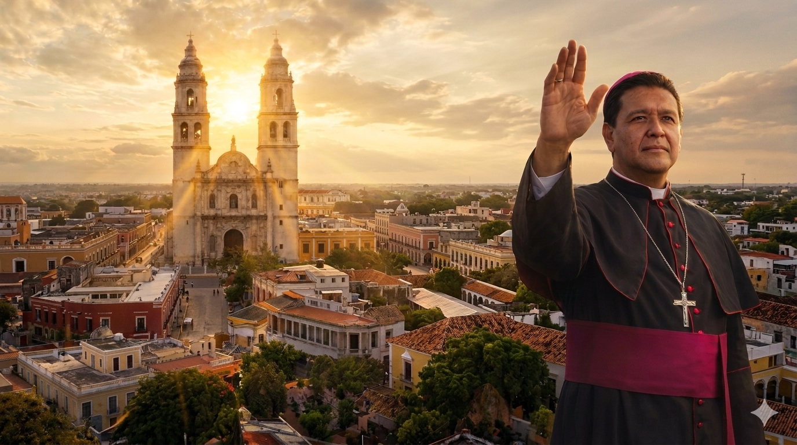
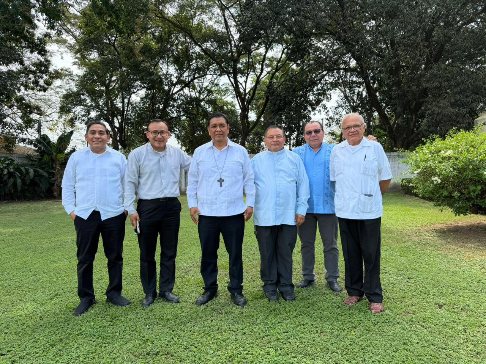

Bienvenido a la Diocesís de Campeche
Mons. José Alberto González Juárez
La Nunciatura Apostólica informa que el papa León XIV ha designado un nuevo obispo para la Diócesis de Campeche. Un pastor con corazón misionero.

El pasado 11 de Febrero, la Nunciatura Apostólica en México hizo público, a través de la Secretaría General de la Conferencia del Episcopado Mexicano, que Su Santidad León XIV se dignó nombrar al S.E. Mons. José Alberto González Juárez como XV Obispo de la Diócesis de Campeche. Quien hasta el momento del anuncio, habia fungido como Obispo de Tuxtepec en Oxaca.
¿Pero, quién es Monseñor González Juárez?
Nació el 19 de Diciembre de 1967 en El Parral, municipio de Villacorzo, Chiapas. En 1986 ingresó al Seminario de la Inmaculada Concepción de San Juan de los Lagos, Jalisco, donde inició su formación sacerdotal. Posteriormente continuó sus estudios en el Seminario de Santa María de Guadalupe de Tuxtla Gutiérrez, Chiapas, entre 1993 y 1995. Fue ordenado sacerdote el 8 de diciembre de 1995. Años más tarde, de 1999 a 2001, realizó la Licenciatura en Filosofía en la Universidad Pontificia de México.
Una Vida de Servicio
- 1995–1996 Auxiliar de disciplina y profesor en la Facultad de Filosofía del Seminario de Tuxtla Gutiérrez
- 1996–1998 Vicario parroquial en la Parroquia de San Fernando
- 1998–1999 Administrador parroquial de la Parroquia La Divina Providencia, Director espiritual y profesor en el Curso Introductorio del Seminario Santa María de Guadalupe, de Tuxtla Gutiérrez, Chiapas
- 2001–2008 Asesor, profesor y prefecto de Filosofía en el Seminario Santa María de Guadalupe, de Tuxtla Gutiérrez, Chiapas
- 2008–2012 Rector del Seminario Santa María de Guadalupe, de Tuxtla Gutiérrez, Chiapas
- 2012–2013 Vicario General de la Arquidiócesis de Tuxtla Gutiérrez
- 2013–2015 Vicario episcopal para el Clero y la vida consagrada
- 2014–2015 Párroco de la Parroquia de la Inmaculada Concepción
Ministerio Episcopal
Fue nombrado Obispo de Tuxtepec por el Santo Padre Francisco el 6 de junio de 2015. Recibió la ordenación episcopal y tomó posesión de la Diócesis de Tuxtepec el 22 de julio del mismo año. Posteriormente, fue designado suplente del Consejo Permanente de la Conferencia del Episcopado Mexicano (CEM) por la Provincia de Oaxaca para el trienio 2024–2027. El 11 de febrero de 2026, el Papa León XIV lo nombró XV Obispo de la Diócesis de Campeche, quedando en espera de su toma de posesión canónica, programada para el 01 de Mayo en la Santa Iglesia Catedral.
El Primer Encuentro

Con motivo de su próxima llegada, se llevó a cabo el primer encuentro entre el Colegio de Consultores de la Diócesis de Campeche y el Obispo electo. Los días 02 y 03 de Marzo, en la Diócesis de Tuxtepec, los miembros de este organismo diocesano se reunieron con Monseñor, quien los recibió cordialmente y expresó su gratitud por la presencia de los sacerdotes.
Durante este encuentro, los consultores tuvieron la oportunidad de conocerlo, escucharlo y recibir su bendición, además de dialogar sobre el itinerario de su próxima llegada a la diócesis, el cual será dado a conocer próximamente.
Redacción Central
Oficina de comunicación
Equipo de periodismo religioso de la Diócesis de Campeche, con sede en Cd. del Carmen. Colaboramos con boletín “Laudato Si’ y el Semanario “Desde la Fe”.